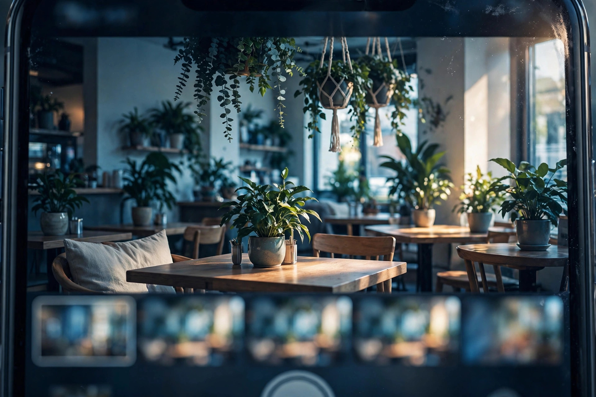
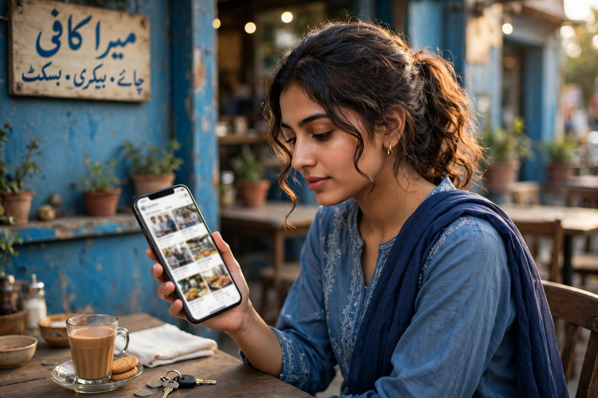

Words on your profile tell customers what you do. Photos show them. A person choosing between two unfamiliar businesses will almost always study the pictures: the front of the shop, the inside, the people, the work. Photos answer the questions words cannot, is it clean, is it busy, does it look like the kind of place I can trust with my money or my car or my family dinner.
The encouraging part is that trustworthy photos do not require a professional camera or a big budget. They require honesty, decent light and a little thought about what a stranger needs to see.
The Essential Photos Every Profile Needs
- The exterior. A clear shot of your shopfront or entrance, taken from where a customer would approach, so people can recognise the place when they arrive. Include the signboard if you have one.
- The interior. A few bright photos inside, showing the space as customers experience it: seating, shelves, the counter, the workshop floor.
- The team. Friendly photos of the people who serve customers. Faces build more trust than any other image, because people prefer buying from people.
- The work or products. For a salon, finished styles; for a workshop, a repair in progress and completed; for a shop, the goods on the shelves. This is proof, not decoration.
- Identity photos. Your logo and a good cover photo that represents the business at a glance, since these frame how the profile itself looks.

What Makes a Photo Trustworthy
Trustworthy photos share a few qualities. They are real: your actual premises, your actual staff, your actual work. They are recent, so the shop in the picture matches the shop today. They are clear and bright, taken in good light, wiped lens, held steady. And they are ordinary in the best way, showing the business as it truly is on a normal working day. A slightly imperfect genuine photo beats a glamorous fake one every time, because customers are not judging photography; they are judging honesty.
Avoid heavy filters, stretched images and photos copied from the internet. Stock pictures of strangers' shops may look neat, but a customer who arrives and finds a different place feels misled, and Google's guidance favours photos of the real business. Photos are part of profile quality in our local SEO and Google Business Profile service for exactly this reason: they turn a listing into evidence.
Taking Good Photos With Just a Phone
Modern phones are more than good enough. Clean the lens, because a greasy lens is the main cause of hazy photos. Shoot in daylight where possible, or with all the shop lights on. Tidy the scene first: clear the counter, straighten the display, move the motorbike out of the doorway shot. Take each photo a few times from slightly different angles and keep the best. Hold the phone level, tap to focus on the main subject, and avoid zooming, which reduces quality; step closer instead.

Keep Adding Photos Over Time
A profile with photos from three years ago and nothing since looks half-abandoned. Fresh photos signal an active business: new stock arriving, a renovated corner, seasonal items, a busy Saturday, a new team member. You do not need a photoshoot every week. Adding a handful of genuine photos each month, as part of a monthly local SEO routine, keeps the profile alive and steadily grows the visual proof customers browse before choosing you.
Customer photos matter too. Visitors will add their own pictures, good and occasionally unflattering. You cannot remove honest customer photos, and you should not fear them; a profile with a mix of owner and customer photos looks lived-in and believable. You can report photos that clearly break Google's rules, such as images of a different business entirely.
Photos and First Impressions in Search
Your cover photo and most-viewed images often appear right in search results and Maps listings, before a customer opens anything. That thumbnail is your shop window for the whole internet. A dark, blurred or missing image quietly sends people to the next result, while a bright, clear photo of a real, welcoming business earns the tap. When we review a profile using our Google Business Profile optimization guide, the photo set is one of the first things checked, because it shapes every first impression that follows.

A Simple Photo Habit to Start Today
That is all it takes to move from a bare listing to a profile that looks like a real, trusted business. Take the photos this week, with the phone already in your pocket, and let customers see what your regulars already know.
Frequently Asked Questions
How many photos should my Google Business Profile have?
There is no magic number. Cover the essentials first: exterior, interior, team, products or work, and identity photos like your logo and cover. Then keep adding a few fresh, real photos regularly, because an active, growing set builds more trust than a fixed count.
Can I use stock photos on my profile?
It is a poor idea. Stock photos do not show your real business, customers can often tell, and Google prefers genuine photos of the actual place. Real photos taken on an ordinary phone almost always build more trust than polished library images.
What if a customer uploads a bad photo of my business?
You cannot delete customer photos yourself, but you can report ones that break Google's policies, such as irrelevant or offensive images. The practical answer is to add plenty of your own good photos, so an unflattering snapshot is not the main picture people see.
Do photos really affect my local rankings?
Photos support rankings indirectly: profiles with real, recent photos look complete and prominent, and customers interact with them more. Their bigger effect is on choice. When two businesses rank together, clear photos often decide which one the customer calls.
Want More Customers From Google?
Call 0327 7350830 or email seozaheer14@gmail.com. Zaheer Seo Expert, Layyah - Rajan Shah Road, Rana Nagar, Chak 116 TDA, Pakistan. Open 24 hours.
Get Your SEO Strategy →